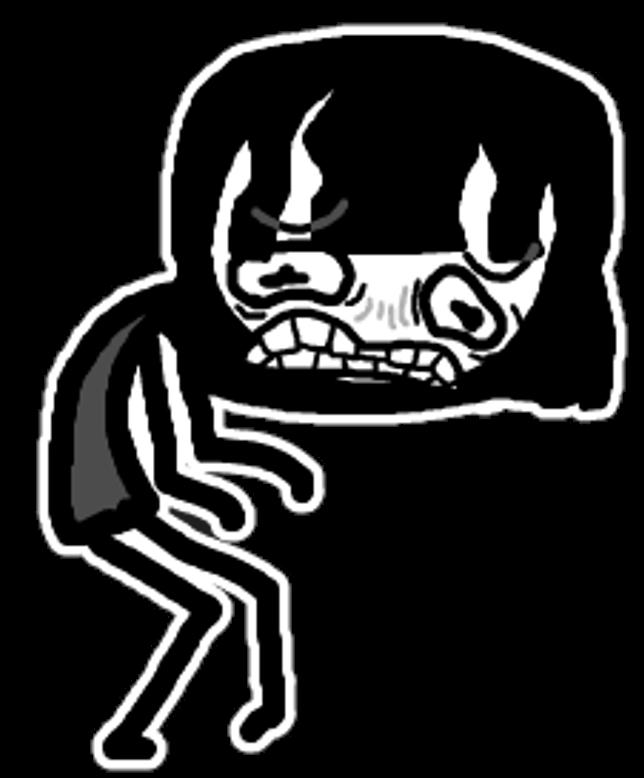

Postava, na kterou se zaměříme, pochází z krátké indie-hry ("30 minut") Adventures With Anxiety! (link v obrázku nahoře) vytvořené Nicky Casovou. Hra se zaměřuje na příběh hlavní lidské postavy Hong která bojuje s úzkostí. Zvláštností je, že hrajeme za úzkost samotnou, zosobněna a vyobrazena jako červený vlk BeeBee. Cíl hry je ochránit člověka před světem a jimi samotnými
(Hra spadá pod licenci "public domain", všechny původní obrázky jsou ze hry a jsou volně dostupné stejně tak i zdrojový kód)

Více o hře
O postavě
galerie